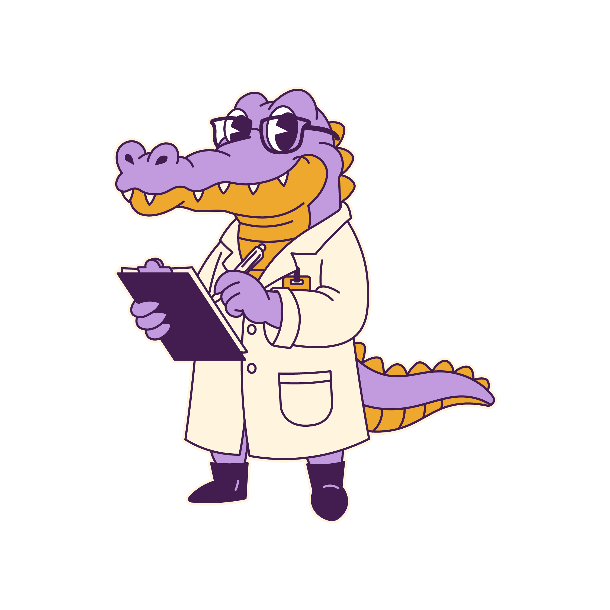

Conectando ensino, prática e inovação dentro da universidade. Do laboratório à vida acadêmica — o CEA transforma conhecimento em experiência.

Projeto de Extensão vinculado à Universidade Federal de Mato Grosso do Sul
O Projeto CEA aproxima os estudantes da realidade da Engenharia de Alimentos, promovendo atividades práticas, conteúdos acessíveis e integração entre acadêmicos dentro da UFMS.
Saiba mais →Participe das atividades, desenvolva habilidades e construa sua formação na prática.